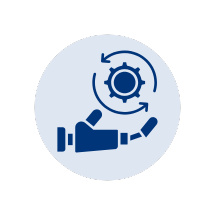

AI Automation Services
AI Automation Services
AI agents and automation where they actually earn their keep: built around your documents, your tools and the work your team repeats every day.
Where AI Helps
Where AI helps, and where it doesn’t
Most teams have work that follows the same pattern every day: read something, check it, summarise it, and send it to the right person or system. It takes hours, it isn’t anyone’s favourite job, and it is exactly where AI does well.
AI is not the answer to everything, though. If the process itself is unclear, AI makes the confusion faster. If a simple rule will do, plain automation is cheaper and more reliable. We’ll tell you which is which before you spend anything.
A good fit when
- Your team copies, checks, summarises or routes the same information every day
- The answers are in documents you already have: policies, manuals, contracts, past proposals
- Inputs vary (emails, PDFs, scanned forms) but the output is always the same shape
- A person can review the result before it counts
Not a good fit when
- The process isn’t agreed yet, so fix the process first
- A fixed rule would do the job, so regular automation is the better choice
- Decisions must be made with no human check at all
What We Build
AI that works inside your business, not beside it
-
AI agents
Agents that take a task, such as qualifying a lead, following up an overdue invoice or preparing a weekly report, and carry it out step by step across your CRM, ERP and email. They ask for approval before anything important happens.
-
Document-aware assistants
Ask a question, get an answer from your own policies, manuals, SOPs and contracts, with a link to the source so people can check it. Built with retrieval-augmented generation (RAG), so answers come from your documents, not the internet.
-
AI inside your CRM and helpdesk
Classify and route incoming tickets and enquiries, pull key details out of emails, and draft replies for your team to approve, inside Zoho, Odoo or your own software.
-
Document processing
Turn invoices, purchase orders, forms and enquiries into structured data, ready for your ERP or CRM without retyping.
-
Pre-sales drafting
Read an RFP or enquiry, extract the requirements and produce first drafts of the scope, proposal outline and estimate for your team to refine.
-
Process automation around the AI
The AI step is only one part. We connect it to your systems, add approvals, notifications and audit logs, and remove the manual copying on either side.
Where Teams Start
Common first projects
-
Sales
An agent that qualifies new enquiries, updates the CRM and schedules follow-ups for your sales team.
-
Customer support
Tag, prioritise and route tickets, suggest replies from your knowledge base, and summarise long threads.
-
HR & admin
An assistant that answers employee questions on leave, travel and policy from your HR handbook.
-
Finance & operations
Pull data from invoices, purchase orders and delivery notes into your accounting or ERP system.
-
Manufacturing
Search SOPs, machine manuals and quality documents from the shop floor in plain language.
-
Education
Qualify admission enquiries, answer common parent questions and summarise counsellor notes in your CRM.
How We Work
Pilot first, then build for real use
-
Find the right task
We look for repetitive work with clear inputs and outputs, and agree how success will be measured: time saved, accuracy, or faster turnaround.
-
Pilot on real examples
A small, time-boxed build tested on real examples from your business. You see measured results before committing to more.
-
Build for production
We connect it to your systems with review steps, access controls and logging, so it is safe to use every day.
-
Hand over and monitor
Documentation, training for your team, and guidance on monitoring quality and running costs. We stay on for support.
Data & Control
Your data, your rules
We design around where your data flows and who can see it before we write any code.
- AI services used on terms that don’t train models on your data
- Documents stay in systems you control
- The AI sees only what the person asking is allowed to see
- Human review before anything is sent, saved or approved
- Logs of what was asked and what was answered
How We Build
AI-assisted development, engineer-reviewed
We use AI in our own work too. Every CRM, ERP, portal and automation we build is developed with AI-assisted tools, and every change is reviewed and tested by our engineers before it reaches you.
- Working software to review earlier, and more often
- Faster changes when your feedback comes in
- More time spent understanding your process, less on boilerplate code
- Tests and documentation written alongside the code
See what we’ve built in our case studies.
FAQ
AI Agents & Automation: common questions
Still unsure? Ask us directly or call +91 97080 81818 or +91 90962 50998.
What is an AI agent?
An AI agent is software that is given a goal rather than a fixed script. It decides the steps, uses your tools (for example looking up a customer in the CRM, checking stock in the ERP or drafting an email) and reports back. We build agents with clear limits on what they can do, and with approval steps before actions that matter.
Do you use AI to build software?
Yes. All our development is AI-assisted, which lets us deliver working software sooner and respond to changes faster. Every change is still reviewed and tested by our engineers, and you own the code and documentation we deliver.
Is our data safe if we use AI?
We design around where your data goes and who can see it before we write any code. We use AI services on terms that do not train models on your data, keep documents in systems you control, apply the same access rights your team already has, and log what the AI is asked and what it answers.
Do we need a lot of data to get started?
Usually not. Most useful AI automation works from the documents and records you already have, such as policies, manuals, past proposals, tickets or emails. We don’t need to train a model from scratch.
What does a pilot involve?
A small, time-boxed build on one process, tested on real examples from your business. We measure accuracy and time saved against how the work is done today, so you can decide on facts whether to take it further.
Will AI replace our team?
That is not the goal. We automate the copying, checking, summarising and routing, and keep people in charge of decisions. Every system we build has review steps where your team approves or corrects the AI’s work.
Can AI work inside Zoho, Odoo or our own software?
Yes. We add AI to the tools your team already uses, for example classifying tickets in Zoho Desk, drafting replies in your CRM or extracting data into your ERP, so people don’t have to learn a new system.
How much does AI automation cost?
It depends on the process, the systems involved and the volume of work. We usually start with a fixed-scope pilot. After it, we share a written proposal with scope, timeline, cost and expected running costs for the AI service before any further work starts.
Have a task your team repeats every day?
Describe it in a few lines: what comes in, what your team does with it and where it goes. We’ll tell you honestly whether AI, plain automation or neither is the right fit, and what a pilot would look like.
Discuss an AI agent or pilotOr call +91 97080 81818 or +91 90962 50998 · info@thryvmax.com